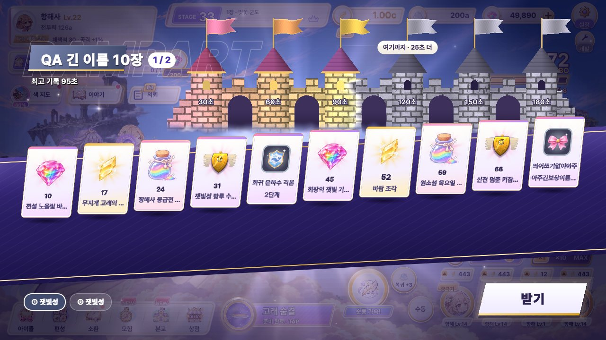

보상 카드 이름 잘림 확인 (1280×720, 카드 10장)
QA가 일부러 아주 긴 이름 10개를 넣어 찍은 화면입니다. 실제 게임 이름(채색석, 바람 조각, 「희귀 은하수 리본 2단계」 등)은 잘리지 않습니다.
카드 부분 확대
전체 화면

정하실 것: ① 이대로 둔다(아주 긴 이름만 「…」로 잘림) ② 카드가 많을 때는 이름을 두 줄로 보이게 하고 숫자를 작게 한다 ③ 카드를 두 줄로 나눠 배치해 카드를 키운다
QA가 일부러 아주 긴 이름 10개를 넣어 찍은 화면입니다. 실제 게임 이름(채색석, 바람 조각, 「희귀 은하수 리본 2단계」 등)은 잘리지 않습니다.
